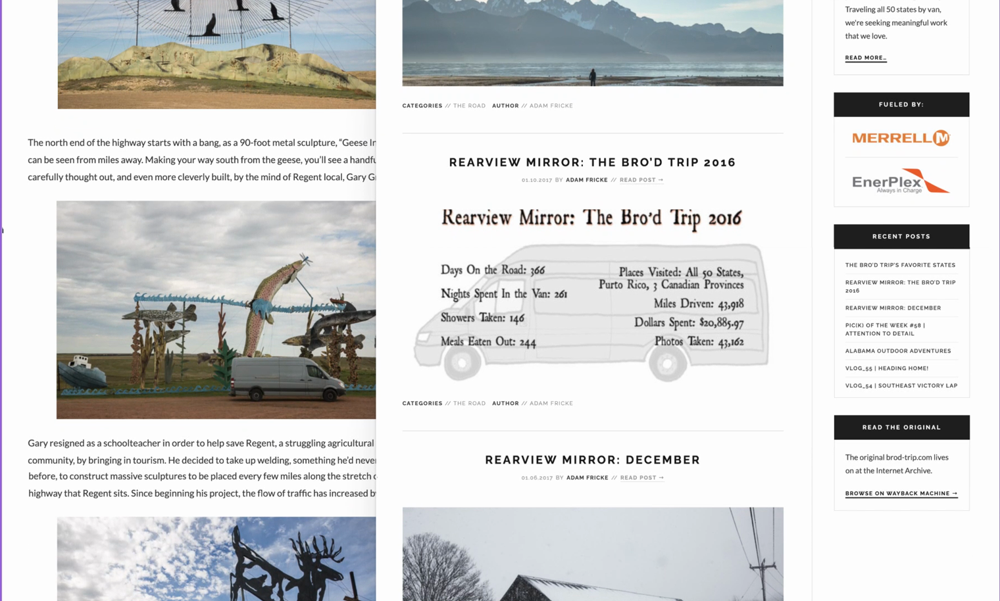
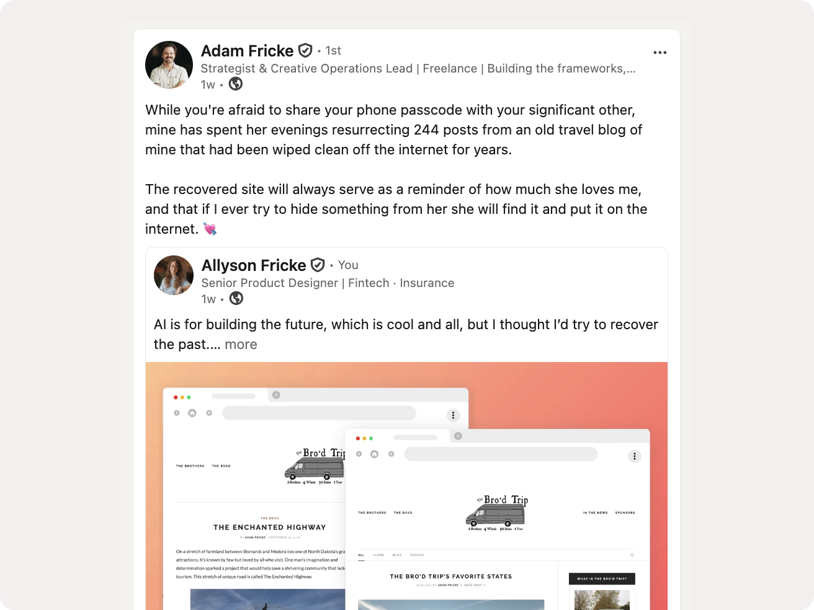

Rebuilding a Lost Archive with Claude Code
A 244-post travel blog lost with no backup, rebuilt from the Wayback Machine using Claude Code.

The Situation
A decade ago, my husband spent a year driving a van through all 50 states, documenting the whole trip one post at a time. Somewhere along the way, the WordPress site holding all of it went dark. No export file, no local drafts, no backup. Two hundred and forty-four posts gone, along with the record of one of the most significant years of his life.
What Survived
The only thing left was whatever the Wayback Machine had managed to crawl before the site disappeared. The crawl was partial and uneven: some posts came back clean, others were missing images or broken outright, and different crawl dates sometimes returned different versions of the same post. Before any rebuilding could start, the real question was simple: what do we actually have, and what do we do about what's gone.
Two Attempts
The first attempt was straightforward: rebuild it exactly how it was, hosted on WordPress, one post at a time. Fifteen posts in, it was clear that pace wasn't going to get through 244 posts. I stopped.
The second attempt started with Claude Code as the core tool instead of the whole process. Feed it a Wayback Machine URL, and it crawls the archived post, pulls the content, and returns a clean static HTML file. Running at roughly $20 a month in Claude usage, that approach got through the bulk of the archive, rate limits and all, until Anthropic restricted outbound fetching to the Wayback Machine mid-project. The fix was to download the archived HTML locally instead and feed the files in directly, one more adjustment in a project already defined by working with whatever survived. The full rebuild, including a cleanup pass across all 248 files (the 244 posts plus the about and sponsors pages), came to about $480 in usage total.
About 40% of the original images couldn't be recovered from the archive at all. Instead of a gap, each of those gets a placeholder: a note that the photo was lost, its original filename, and whatever caption survived in the metadata, so a missing photo still reads as a known gap instead of a broken page.
The Commit History
Claude Code did more than fetch pages. It restructured templates, rewrote the fetch pipeline when the restriction hit, and ran the cleanup pass across all 248 files. I reviewed changes in VS Code before pushing to GitHub. The repo stays private, but the commit history backs this up: real commits, real dates, spread across about two weeks of work.
Where This Leaves It
This one is smaller than the rest of this portfolio on purpose. It started as a favor for my husband, not a business problem, and it stayed that way the whole way through. What it does show is real: Claude Code as a genuine part of how the work got done, from the first crawl to the last file in the cleanup pass, not a tool I dabbled with once. If the question is whether I'm comfortable writing and shipping real code with AI in the loop, this is the answer.
